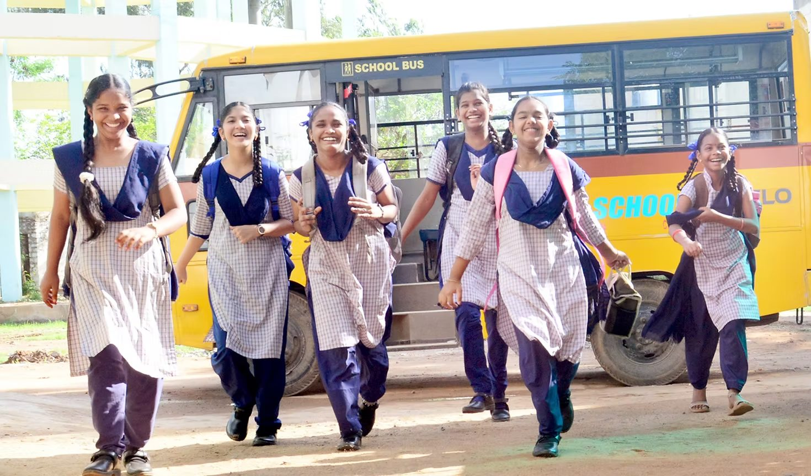
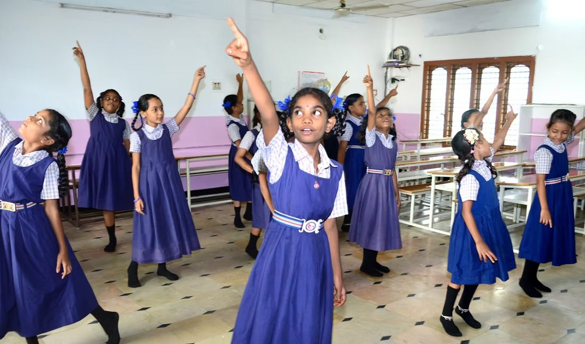
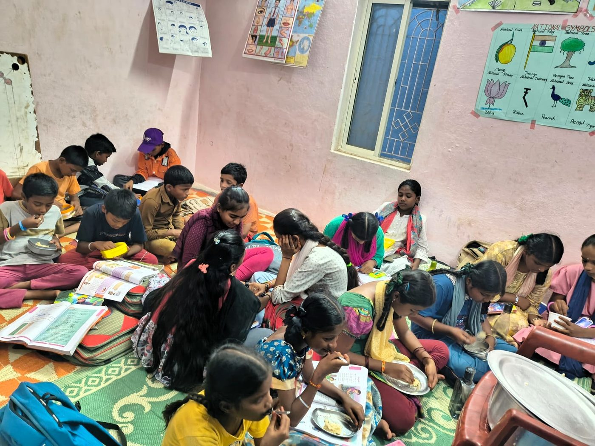
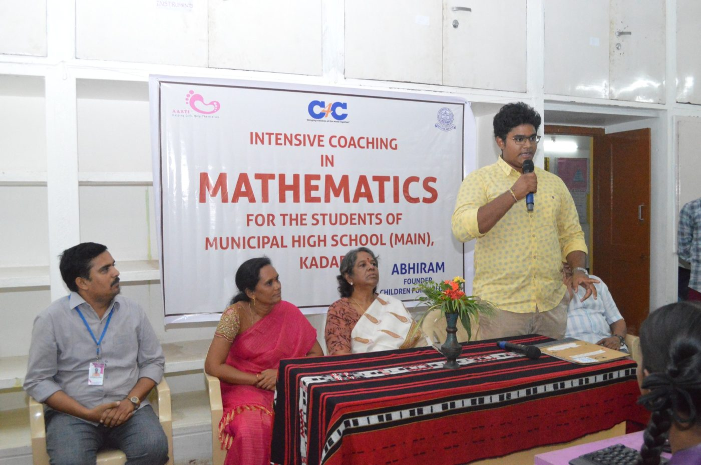

Education is a right, not a privilege.
Aarti School was founded in 2007 to give every child — whatever their background — a place to learn, belong, and thrive, built on kindness, compassion, and equal opportunity.
Sponsor a Child’s Education
Four ways we help children learn
We believe education is a fundamental right. We deliver it through four connected programs — a school of our own, after-school centres in the neighbourhoods where children live, support that keeps promising girls in the classroom, and a global community of children helping children.

Aarti School
Nurturing bright minds
Aarti School is a high-performing English-medium school — our students consistently do well in the state board examinations. At the same time, we make room for children who might otherwise miss out: first-generation learners and those who start school late are supported through a dedicated Bridge Program, so no one is left behind. Along the way, our students grow into confident advocates for girls’ education.
Aarti Slum Education Centres
Aarti Vidhya Vikas Kendra — learning where children live
In the slums in and around Kadapa, a child comes home from school to one shared room: no desk, no quiet, no lamp to read by, and no one who can help with the homework. School alone was never going to be enough.
So we took the classroom to them. Aarti Vidhya Vikas Kendra now runs ten after-school centres inside these neighbourhoods, each one a lit, quiet room with a teacher who knows every child by name. Children arrive at the end of the school day for tutoring in the subjects that most often decide whether they stay in education at all.
The change has been hard to miss. Grades have climbed term on term — but the difference the teachers talk about most is the confidence: children who used to sit silently at the back of the class are now the first to raise a hand in it.


Aarti Rising Stars
Empowering future leaders
Aarti Rising Stars finds high-achieving girls from disadvantaged families who are at risk of dropping out after Grade 10 — and rather than support them from a distance, brings them home.
The girls live at Aarti Home and travel to school each morning alongside our own children. They share the same routines, the same evening study hours, and the same expectations — which turns out to matter as much as the fees and books do. A girl who was the only one in her household still studying is suddenly surrounded by others doing the same.
Alongside a bed and a desk, they get the mentorship and encouragement to keep going. What began with just 3 girls in 2024 now supports 21.
Children for Children
Young people investing in young people
Children for Children was born in the COVID-19 pandemic. Over 70 student volunteers from 17 cities across India, the US, and Dubai organised themselves to provide meals for 632 children, build learning materials, and run online classes when schools shut their doors.
When the crisis passed, the volunteers stayed — and the programme found its real work closer to home: helping local children not only get an education, but make the most of the one they have. It funds merit scholarships for bright children from under-resourced families, and runs the after-school tutoring that turns a bare pass into a real result.
The founding premise hasn’t changed. Given the chance, young people will show up for each other.

Send a child to school
Your support keeps classrooms full and futures open. Sponsor a child’s education and help them go as far as their ability will take them.
Sponsor a Child ↗